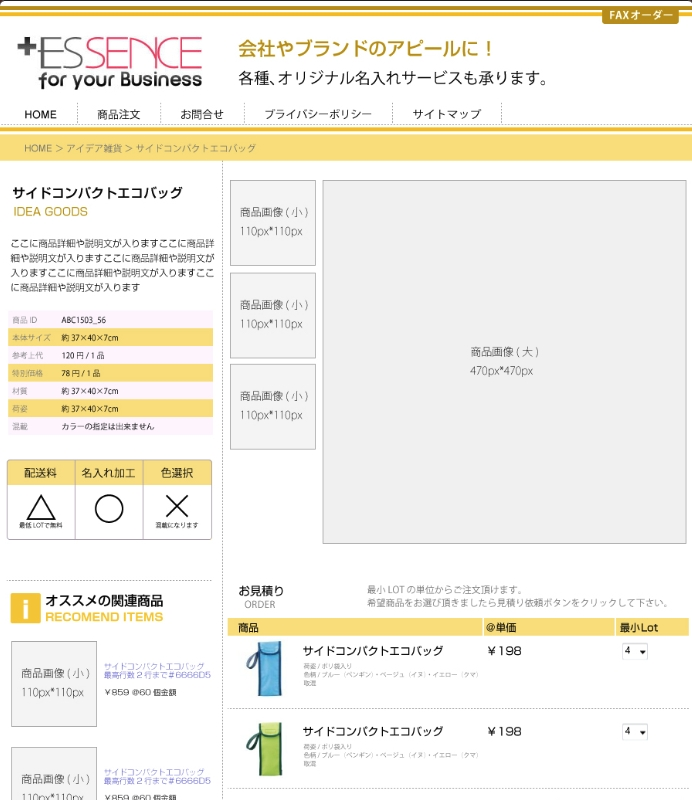

プロジェクト概要：
EC-CUBEを使用したオンラインショップの構築。商品管理、注文処理、決済連携まで一貫して開発しました。
主な機能：
技術スタック：
開発の特徴：
EC-CUBEの標準機能をベースに、クライアントの要望に合わせたカスタマイズを実施。
特に決済連携部分では、複数の決済サービス（GMO FinCode、Stripe）との連携を実装しました。
担当範囲：
要件定義から設計、開発、テスト、デプロイまで一貫して担当。
特にバックエンドの決済連携部分とフロントエンドのUI/UX設計に注力しました。
プロジェクト期間：
2023年4月〜2023年10月（7ヶ月）
成果：
リリース後、月間売上300万円を達成。ユーザーからのフィードバックを元に継続的に改善を実施しています。